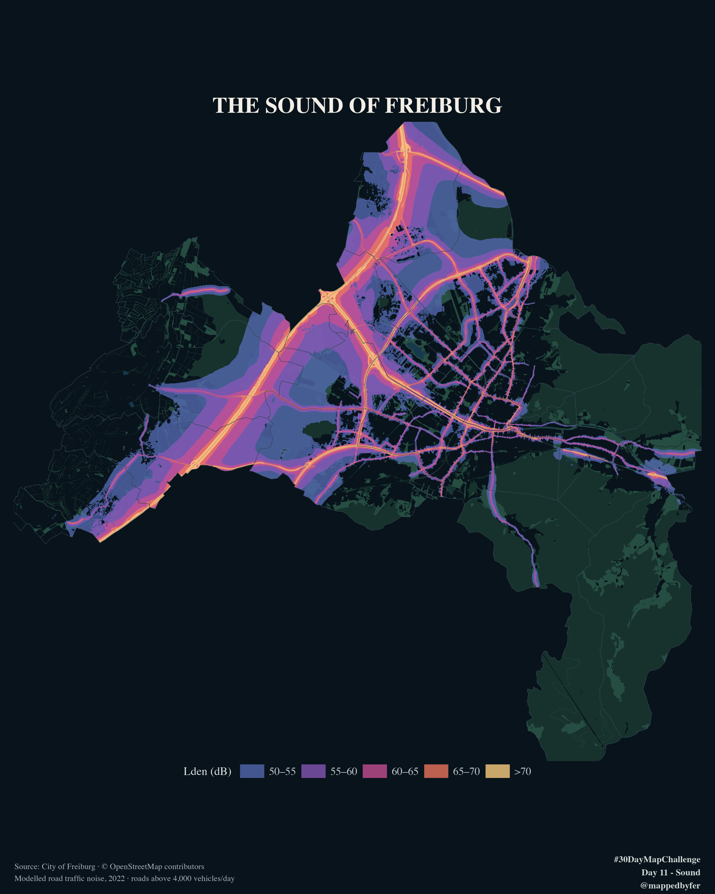

The Sound of Freiburg

Where noise travels — and where relative quiet may survive.
Official road traffic noise contours reveal the louder corridors of Freiburg. Parks, woodland and water provide context for places with lower modelled exposure.

The idea
A dark, atmospheric map makes Freiburg's modelled road-noise pattern the visual focus while parks, wooded areas and water give the city a recognisable structure. It asks where exposure is higher and where lower exposure may coincide with green space.
How it was made
The map uses Freiburg's official 2022 day-evening-night road traffic noise layer (Lden), with mapped decibel classes drawn as polygons. The source polygons were clipped to the city districts and shown over subtle OpenStreetMap context. Lden is a long-term indicator with evening and night weightings; it is not a momentary sound reading. The map uses no interpolation or separate propagation model.
Sources & limitations
Noise: City of Freiburg, 2022 road traffic noise mapping, FreiGIS terms. Context: © OpenStreetMap contributors, ODbL. The layer models road traffic on roads above 4,000 vehicles per day. It excludes railway, tram, industrial and other sound sources; areas without a polygon are not proof of silence. Green areas are contextual, not direct measurements of quietness.